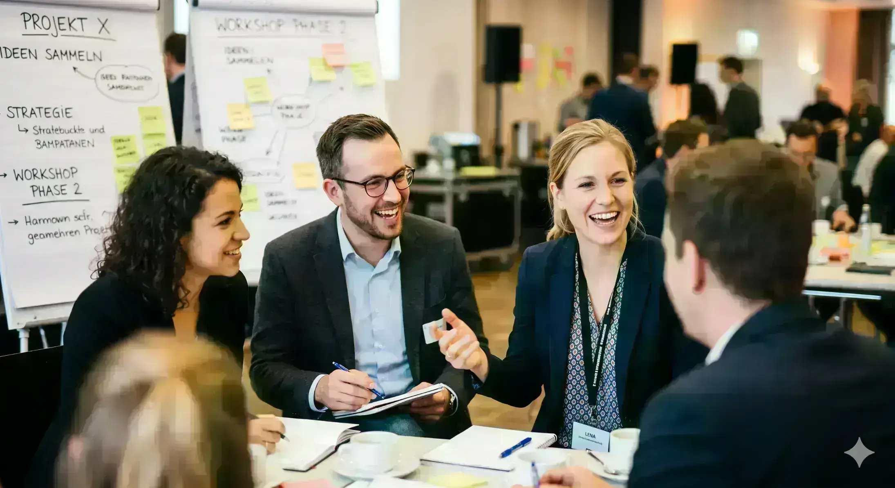

Unsere Zielgruppen
Wer profitiert von unserem Know-how?
Großunternehmen, Mittelstand, Start-ups und Scale-ups — wir arbeiten in jeder Unternehmensgröße.
Großunternehmen
Weil wir die Welt der Führungskräfte in Corporate gut kennen:
der Druck der Shareholder, die Quartalsberichte mit den immer wachsenden Erwartungen; der Umgang mit persönlicher Unsicherheit; die knappen Deadlines und die Frage nach sicheren Entscheidungen; die Sorge um die nachhaltige Teamleistung; das Top-Down versus Bottom-up; die Matrixchancen und -probleme; die Rivalitäten mit offenen und verdeckten Machtkämpfen; die manchmal schwierige Frage nach Verantwortung und Ownership; das gespaltene Verhältnis zur wachsenden Bedeutung von Künstlicher Intelligenz; und die wichtige und oft unterschätzte Rolle von HR.
Mittelständische Unternehmen
Weil wir das langfristige und generationsübergreifende Denken von Familienunternehmen schätzen:
die einzigartige Unternehmenskultur mit ihren oft zu wenig genutzten Stärken; die Verbundenheit und Loyalität zur Belegschaft und zu Kunden mit all ihren Vor- und Nachteilen; die oftmals klare Positionierung und die damit verbundene Sorge, dass nicht alle an einem Strang ziehen; die Direktheit und das oftmals Intuitive; das ambivalente Verhältnis zur Künstlichen Intelligenz; die schnellen Manöver, die vielleicht zu oft in strapazierenden „Firefighting”-Maßnahmen sichtbar werden.
Start-ups und Scale-ups
Weil wir den Traum der Gründer lieben:
ihre unternehmerischen Ambitionen; ihr unbändiges Vorwärtsstreben; ihre Experimentierfreude, verbunden mit der Sorge, nicht schnell genug zu sein; die Verliebtheit in das Produkt; die Unsicherheit, die richtigen Leute an Bord zu haben und die Rollen optimal zu besetzen; das extrem schnelle Wachstum mit den unvermeidlichen Wachstumsschmerzen; die Unsicherheit bei der Zuteilung von Verantwortlichkeiten; der Aufbau von Teams, die Strukturierung von Aufgaben und die Frage nach der Balance von Vertrauen versus Kontrolle; die allgegenwärtige Offenheit für digitale Tools; die zu oft unstrukturierte Kommunikation, und die oft gedachte Frage: Wie geht eigentlich professionelle Führung?
Wir bringen in unserer Arbeit das Beste aus den drei Welten zusammen, und jede profitiert von den Erfolgsmustern der anderen.
In welcher Welt sind Sie zu Hause?
Erzählen Sie uns von Ihrer Situation. Wir hören erst zu und schlagen dann etwas vor.
Kontakt aufnehmen